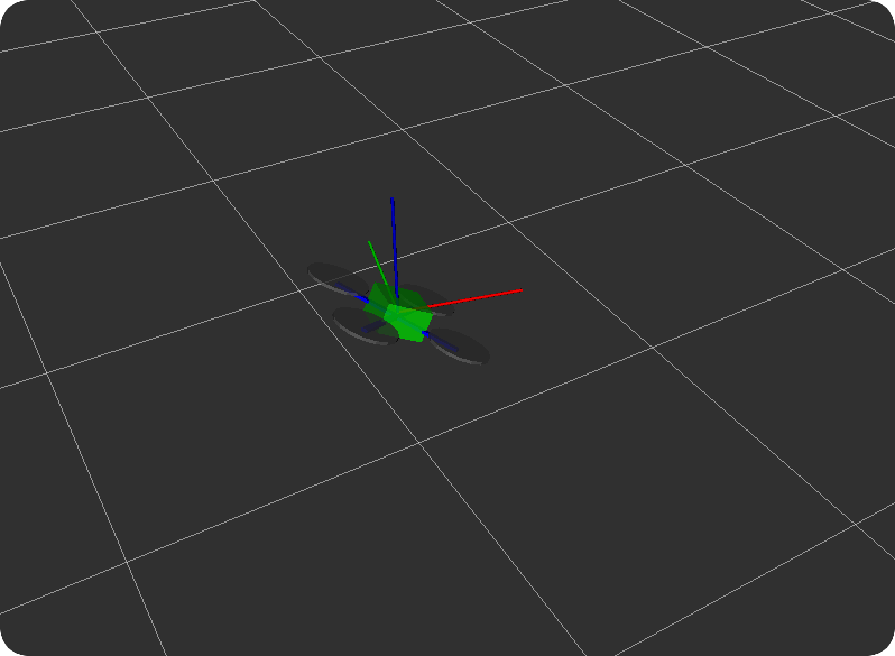

В пакете technic определены основные системы координат (фреймы):
map — глобальная система координат, отсчитываемая от точки запуска полётного контроллера (на схеме показана белой сеткой);
base_link — система координат, привязанная к самому дрону (на рисунке — схематичное изображение квадрокоптера);
body — координаты, связанные с дроном, но без учёта его наклонов по крену и тангажу (обозначены красной, зелёной и синей осями);
navigate_target — координаты целевой точки, к которой дрон движется в данный момент (см. navigate);
terrain — координаты относительно поверхности под дроном в текущей позиции (см. set_altitude);
setpoint — текущая целевая позиция, заданная системой управления;
main_camera_optical — система координат, привязанная к основной камере.
При использовании визуальной навигации по ArUco-маркерам добавляются дополнительные фреймы:
aruco_map — система координат, соответствующая карте маркеров;
aruco_N — координаты, связанные с конкретным маркером, где N — его ID.
Подсказка: согласно стандарту REP-103, для фреймов, связанных с дроном, оси направлены следующим образом: X — вперёд, Y — влево, Z — вверх.
Трёхмерное отображение всех систем координат можно увидеть в rviz.
В пакете Technic для работы с системами координат применяется инструментарий ROS под названием tf2. Этот набор предоставляет разработчикам библиотеки для C++, Python и других языков, которые упрощают выполнение преобразований координат объектов между различными фреймами.
Как это работает?
Отдельные компоненты (ROS-ноды) публикуют информацию о трансформациях в специальный топик /tf. Данные в нем представлены в виде сообщений TransformStamped, которые фиксируют временные и пространственные связи между разными системами координат.
Практическое применение
Получение позиции дрона: Используя модуль simple_offboard, можно запросить текущее положение дрона в любой нужной системе координат. Для этого достаточно указать идентификатор требуемого фрейма (frame_id) при обращении к сервису get_telemetry.
Прямая работа с преобразованиями: Библиотеку tf2 также можно вызывать напрямую из Python-кода для трансформации геометрических данных (таких как PoseStamped или PointStamped) из одной системы координат в другую.
Подробную информацию можно найти в документации: http://wiki.ros.org/tf2